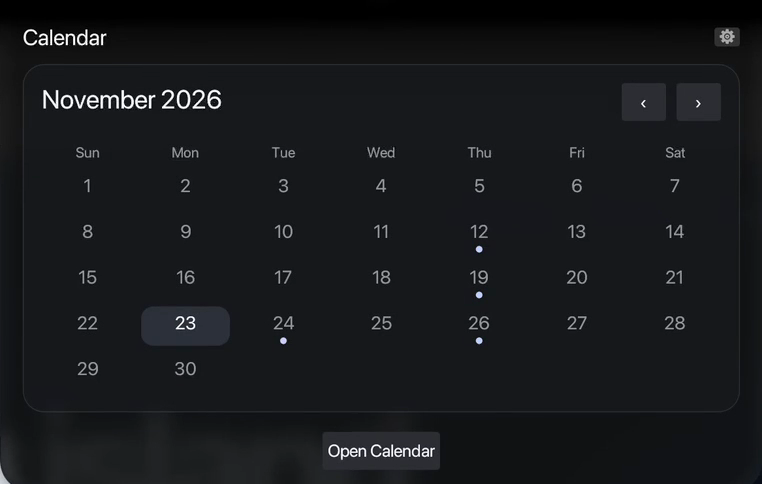
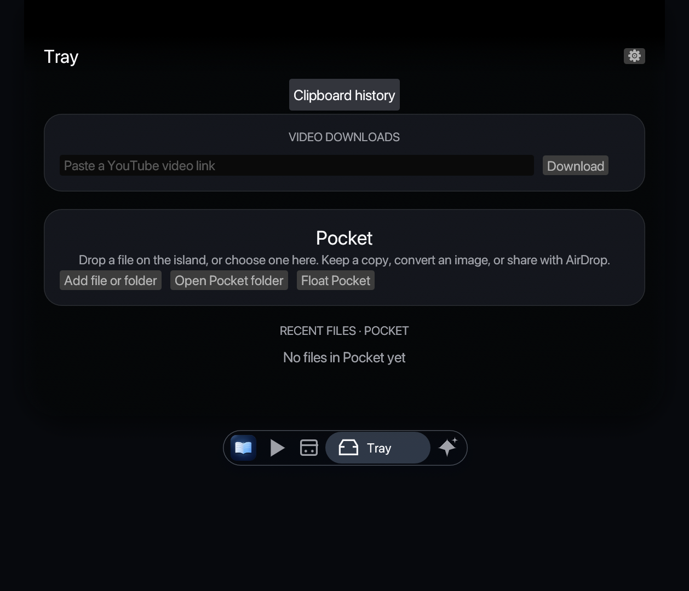

Stay with the music.
Control the current macOS media session, scrub the timeline, see artwork, and optionally follow synced lyrics. System playback also covers supported browser sessions.
The space around your camera becomes a place for the things you reach for all day. Hover for music, your calendar, files, focus tools, and Codex activity. Move away, and your desktop is yours again.
Apple Silicon · macOS 26 or later · Free and open source · Ad hoc signed preview

THE EXPERIENCE
Bookland lives at the top edge of macOS. Hover to open its Liquid Glass panel, switch workspaces in the floating pill, or click to keep it open.
Artwork, playback, a seek bar, volume and optional synced lyrics in one compact place.
Event markers and a tidy day view for calendars connected through macOS.
Keep recent files close, drop something into Pocket, and hand it off when you’re ready.
See local task progress without opening another window.
Approval requests from turns started through Bookland can appear here.
Swipe the workspaces to explore
Interactive illustration with sample content. The macOS app uses native system materials and your own data.
CAPTURED ON A MAC
These are captures from the current macOS build. The island uses native system material, so its glass responds to the desktop behind it.




SEE IT MOVE
Three 25-second Bookland stories with different hooks, expressive narration, and a closer look at the whole island. The films mix app captures with clearly marked illustrations; the screenshots above show the running app.
Swipe to see all three films →
WHAT'S INSIDE
Control the current macOS media session, scrub the timeline, see artwork, and optionally follow synced lyrics. System playback also covers supported browser sessions.
Browse a month with event dots and filter by date. Bookland reads the calendars already connected to macOS, including Google calendars, with permission.
Follow local Codex activity at a glance. Bookland-connected turns can surface questions and approval choices in the island.
Tray and Pocket hold recent files for quick access, copying, conversion, and AirDrop handoff. Nothing needs a separate cloud account.
Keep a Pomodoro timer, to-dos, and a compact system pulse beside your media controls. Arrange the Nook widgets to suit your day.
THE SMALL DETAILS
Hover and it opens. The closed strip wraps the camera cutout, then expands with a native animated silhouette.
Choose what you need. A compact floating pill switches between music, Calendar, Tray, and Agents.
Move on. The island closes after you leave. Click it when you want the panel to stay until Escape.
FREE AND OPEN SOURCE
Bookland is an independent macOS project, written in Rust with native AppKit and Core Animation bridges. There is no Bookland trial, subscription, or account. The original code is MIT licensed. Read the source, build it, report what you find, or help shape what comes next.
$ git clone https://github.com/KyrocEU/bookland.git
$ cd bookland
$ cargo test
$ sh package.sh
$ open Bookland.appRequires macOS 26+, Xcode Command Line Tools, CMake, and Rust. The local source build is ad hoc signed and is not notarized.
GOOD TO KNOW
Bookland anchors at the top edge of a MacBook display and wraps its camera cutout. You can also target a connected display, where Bookland draws a rounded island. The current build shows one island at a time.
Bookland reads calendars connected through macOS Calendar, including a Google calendar, after you grant macOS Calendar access and select one in the app. The Calendar permission flow is still being validated for the current build. Bookland does not store a Google password or OAuth token.
Bookland can show decisions for turns started through its Codex connection. Requests from turns already running in the Codex desktop app do not currently flow into Bookland.
No. Bookland is an independent open-source project inspired by the idea of a Mac hover island. It is not affiliated with NotchNook or OpenAI, and it does not claim full feature parity.